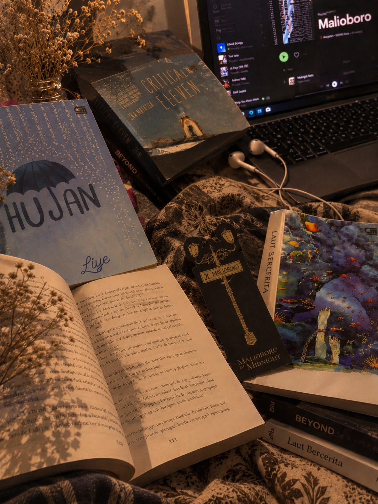
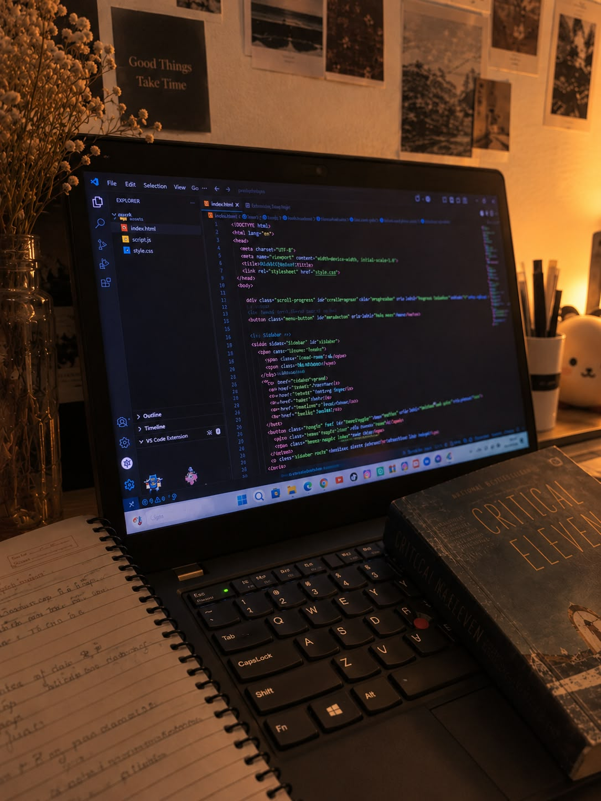
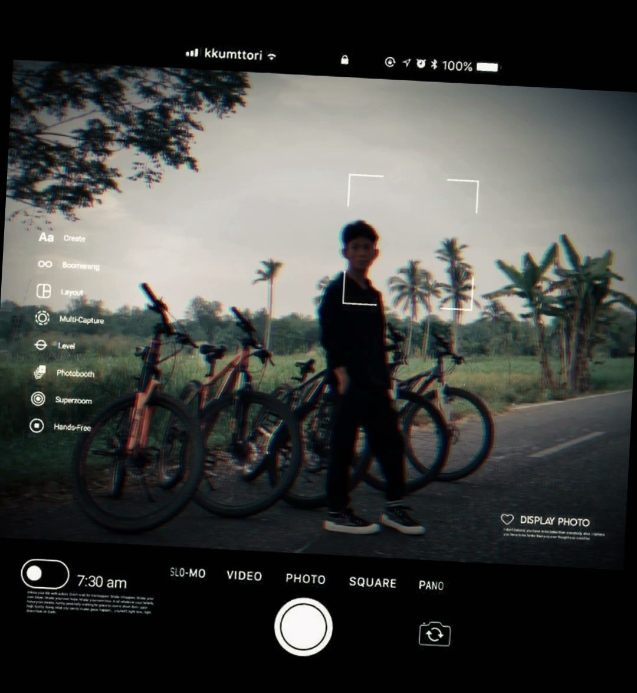
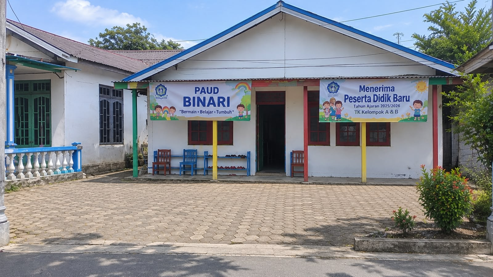
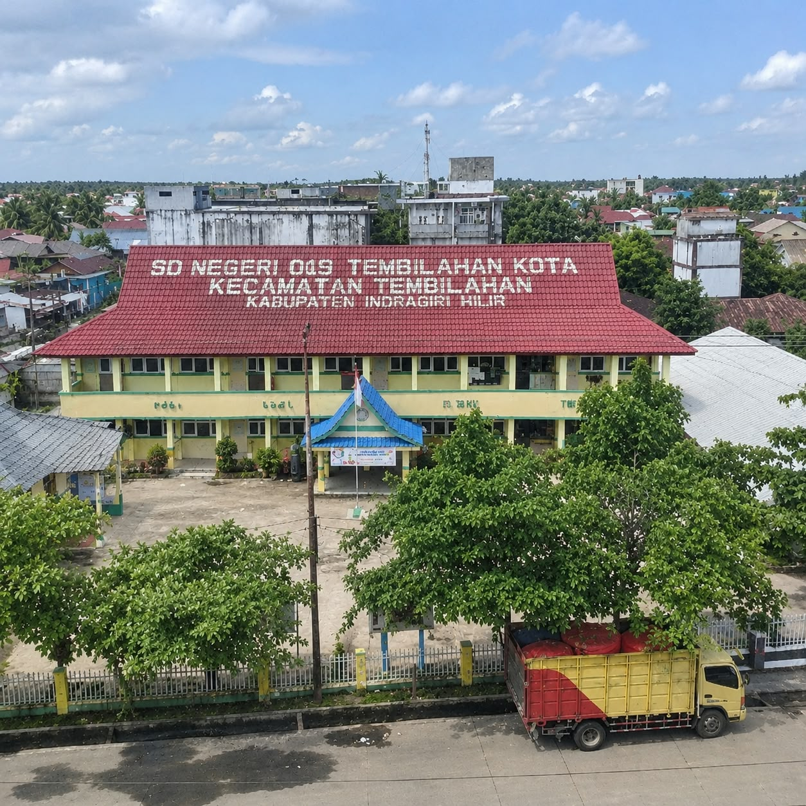
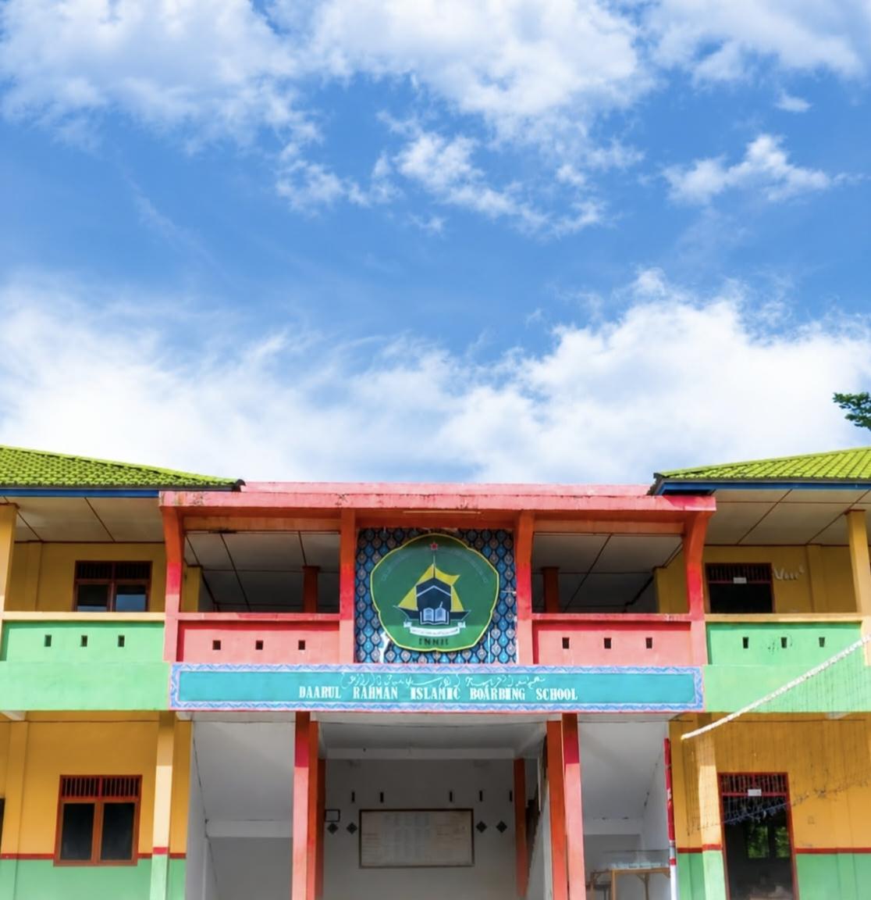
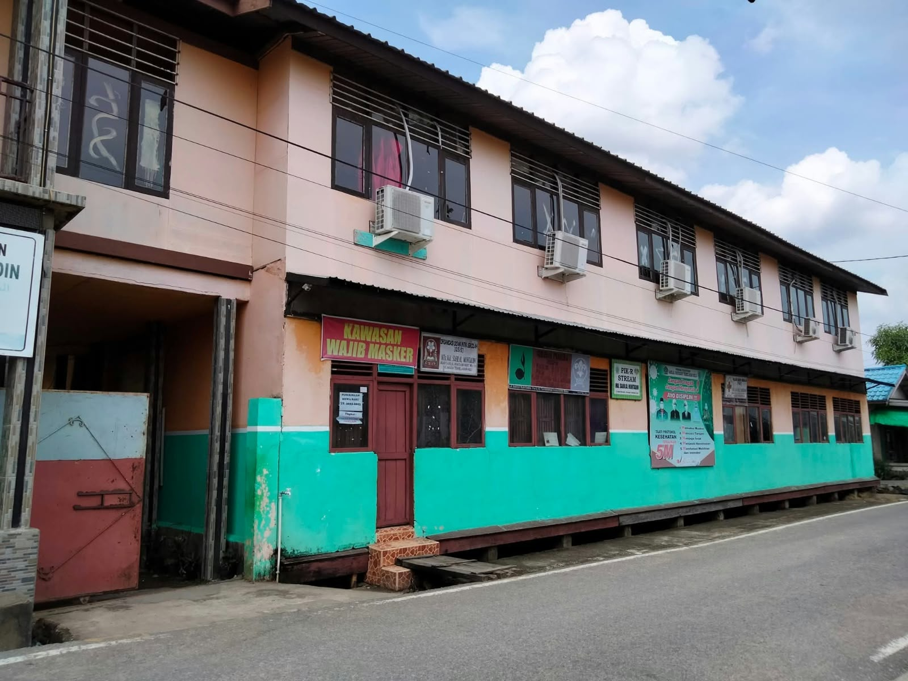
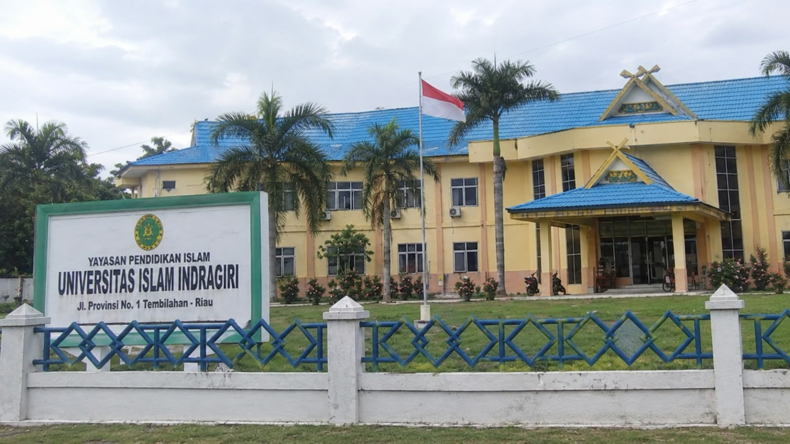

Biodata
- Nama lengkap
- A.WILDAN NASAI'E
- Nama panggilan
- Wildan
- Tempat lahir
- Tembilahan Kota
- Tanggal lahir
- 27 Oktober 2006
- Asal
- Tembilahan
Halo, selamat datang! Saya
Mahasiswa Sistem Informasi Universitas Islam Indragiri
Saya sedang belajar membangun sistem dan website. Di halaman ini kamu bisa mengenal saya lebih dekat: biodata, hobi, dan perjalanan pendidikan saya.
Kenali sayaMengenal lebih dekat profil pribadi saya.
Universitas Islam Indragiri, Fakultas Teknik dan Ilmu Komputer, Program Studi Sistem Informasi.
Suka mengeksplorasi teknologi, belajar hal baru, dan penasaran dengan cara kerja sesuatu, terutama dalam dunia pemrograman.

Saya suka membaca novel, menikmati cerita dan imajinasi di dalamnya, serta mengeksplorasi hal baru, belajar teknologi, dan mencoba membuat sesuatu yang bermanfaat.

Saya suka belajar coding, mengeksplorasi teknologi, dan mencoba membuat website atau program sederhana. Bagi saya, coding adalah cara menarik untuk mengasah kreativitas, logika, dan kemampuan memecahkan masalah.

Saya suka berolahraga, terutama bersepeda. Olahraga membantu saya menjaga kesehatan fisik dan mental.

Pendidikan Anak Usia Dini
Tahun: 2010 – 2013

Sekolah Dasar
Tahun: 2014 – 2019

Sekolah Menengah Pertama
Tahun: 2019 – 2022

Sekolah Menengah Atas
Tahun: 2022 – 2023

Sekolah Menengah Atas
Tahun: 2023 – 2025

Perguruan Tinggi
Tahun: 2025 – Sekarang